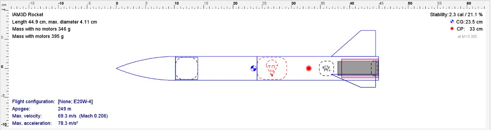
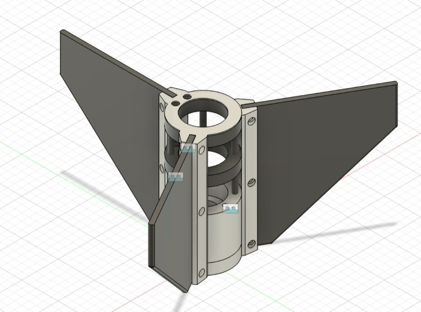
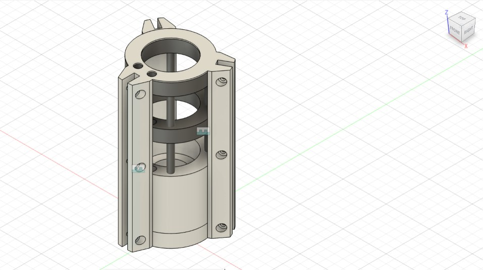
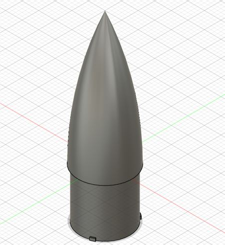
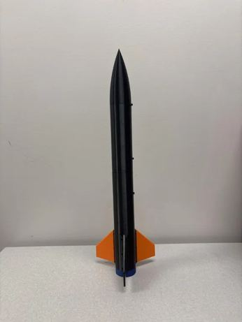
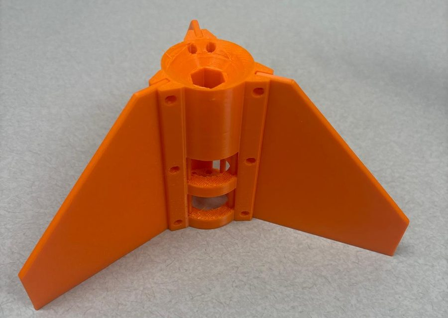
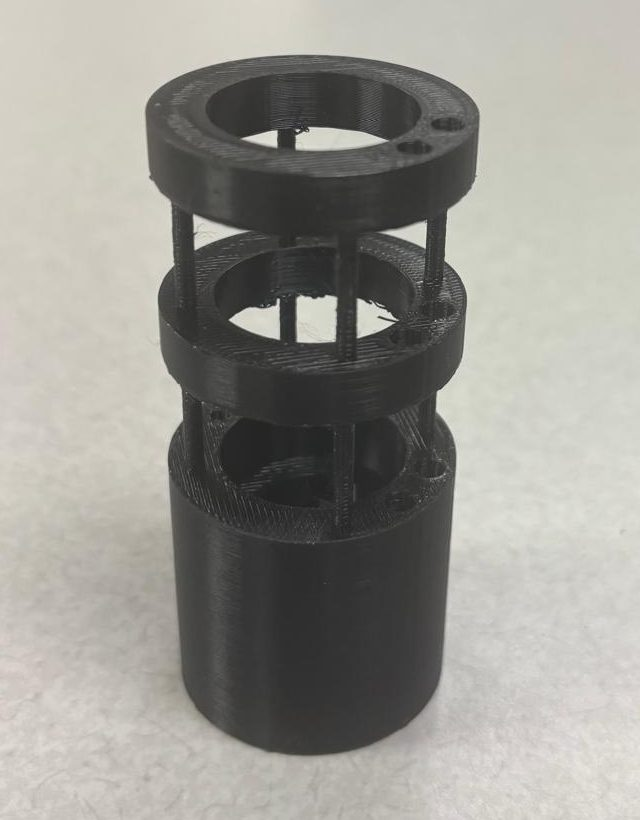
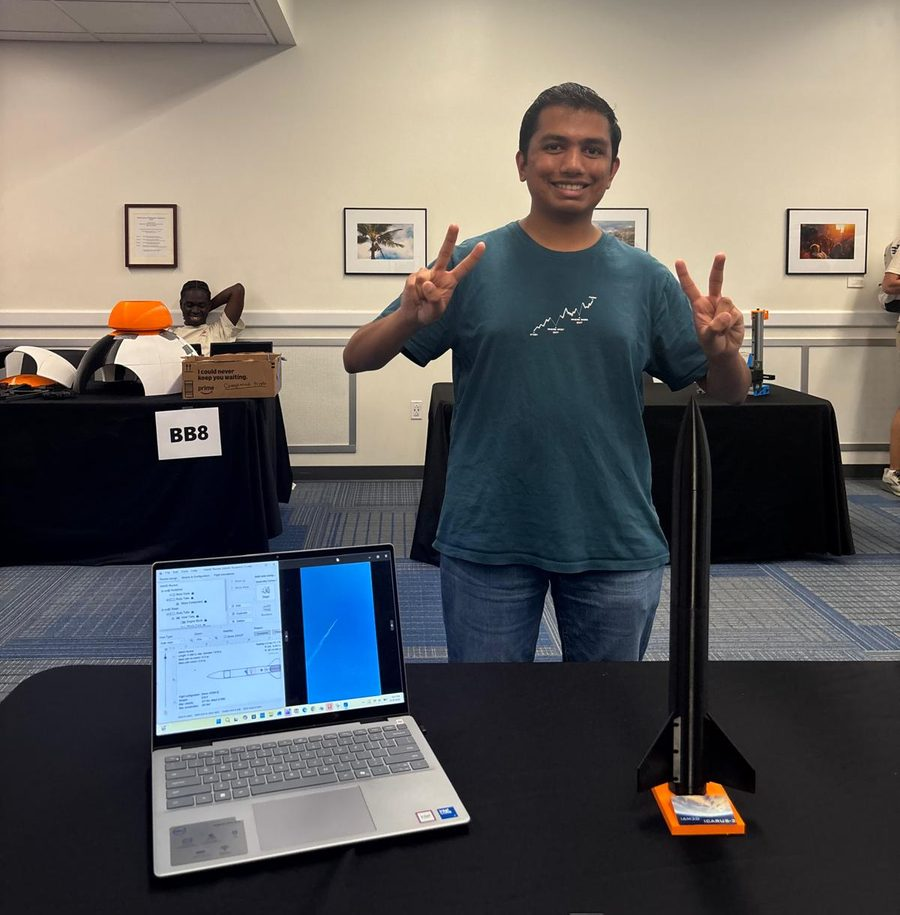
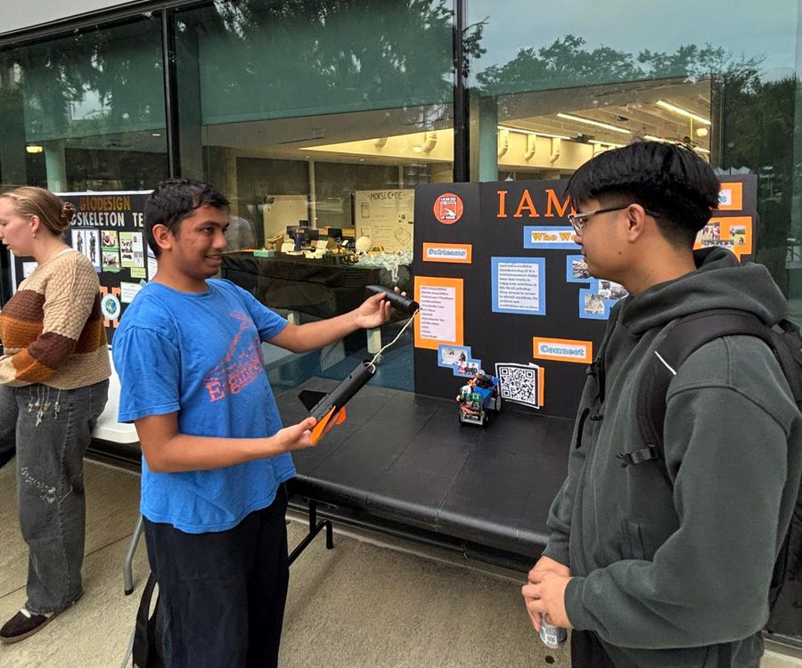

ICARUS 1 and 2, and the V4 redesign
IAM3D’s rocket is built almost entirely from 3D-printed parts. The project began as a two-stage design, and my team is now refining it into a lighter single-stage rocket, first as ICARUS and now as V4.
- Simulation-driven design. I build and refine the full rocket in OpenRocket, from the nose cone and body tubes to the inner tube, engine block, shock cord and mass components. Each simulation checks apogee, speed, acceleration and the balance between center of gravity and center of pressure. ICARUS (44.9 cm, 346 g without a motor) simulates to 249 m, about 818 ft, on an E20W-4 motor with a 2.3-caliber stability margin.
- V4 iteration. V4 grows to 58.4 cm long and 5.71 cm in diameter and moves to an F39T-3 motor. The simulation predicts an apogee of 306 m, a top speed of 97.1 m/s (Mach 0.286) and a 1.86-caliber stability margin, with the center of gravity at 31.4 cm and the center of pressure at 42 cm.
- Modular aft with internal fin brackets. I fused the motor holder and centering rings into a single modular aft that retains the motor, and helped the team move the design from external to internal fin brackets, in both OpenRocket and CAD, for cleaner airflow. The thrust ring, centering rings and brackets are modeled in Fusion 360, and printed prototypes of the aft are shown here.
- Twist-lock nosecone. I helped design a nosecone that twist-locks onto the body. Iterating on these printed parts taught me 3D printing and rapid prototyping through hands-on work.
- Weight reduction and reporting. I am cutting weight from the airframe and validating every cut with hand calculations and FEA, while defining a new objective for the rocket and writing the report on the work.
- Outreach. I show the rocket and its OpenRocket model at showcase events and at the IAM3D table, where I talk with interested students about the project.








